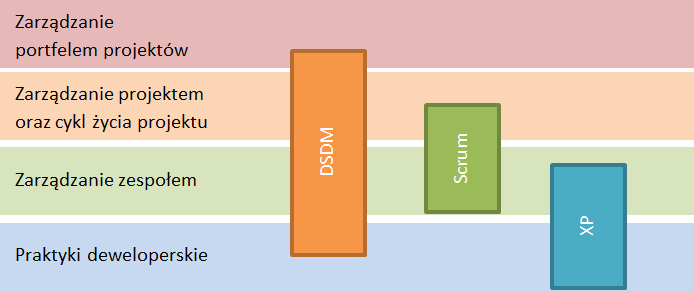

W powyższych rozdziałach przedstawiono kilka zwinnych metodyk zarządzania projektami IT. Decyzja o przedstawieniu jedynie metodyk zwinnych podyktowana jest statystyką mówiącą, że znacząca większość projektów IT to projekty z wyraźnie określonymi wymaganiami, ale niejasnym sposobem ich osiągnięcia, gdzie jako sposób zarządzania najlepiej sprawdzają się właśnie podejścia Agile. Omówione zostały podejścia Dynamic Systems Development Method, Scrum i Extreme Programming. Wybór tych konkretnych metodyk z kolei podyktowany był ich popualrnością, realatywnie długą historią, a także możliwością zastosowania w projektach małych i średnich. W niniejszym rozdziale metodyki te zostaną ze sobą zestawione pod kątem różnych kryteriów, a także przedstaiowe zostaną ich wady i zalety. Zestawienie ma na celu zebranie informacji o omówionych metodykach w jednym miejscu, porównanie przedstawionych podejść, a także zwięzłe uzupełnienie niektórych informacji o metodyce.
Tab. 3.5.1 Zestawienie metodyk DSDM, Scrum i XP
| Dynamic Systems Development Method | Scrum | Extreme Programming | |
| Autorzy | DSDM Consortium | Ken Schwaber i Jeff Sutherland | Kent Beck i Martin Fowler |
| Kraj pochodzenia | Wielka Brytania | USA | USA |
| Rok pojawienia się pierwszej publikacji | 1995 | 1997 | 1999 |
| Oficjalny i najbardziej aktualny podręcznik | DSDM Consortium: DSDM Atern Handbook. UK. DSDM Consortium. 2007. | Schwaber K., Sutherland J.: The Scrum Guide. Przewodnik po Scrumie: Reguły Gry. Scrum.org. 2011. | Beck K., Fowler M.: Planning Extreme Programming. Boston. Addison-Wesley. 2000. |
| Wartości/Założenia | Dostarczenie korzyści biznesowej, dostarczenie produktu na czas, współpraca, poziom jakości, przyrostowy i iteracyjny charakter pracy, ciągła i klarowna komunikacja i kontrola. | Przejrzystość, inspekcja i adaptacja. Wiedza wynika z doświadczenia, a decyzje łatwiej i lepiej podejmować w oparciu o to, co poznane. | Prostota, komunikacja, feedback, szacunek i odwaga. |
| Skala projektów | Projekty o różnej skali | Projekty o różnej skali | Projekty małe |
| Proces | Etap przed projektem; Projekt właściwy, który uwzględnia 5 faz: analiza wykonalności, fundament biznesowy, analizy, wykonanie, wdrożenie; Etap po projekcie. | Faza startu oraz sprinty, a w nich: planowanie sprintu, codzienne scrumy, przegląd sprintu oraz retrospektywa, a także pielęgnacja rejestru. | Etapy analizy, projektowania, wdrożenia i testów zachodzą równolegle na niewielkim odcinku czasu i dotyczą wycinka zakres projektu. |
| Długość iteracji | 80% rozwiązań w ciągu 20% czasu | Od dwóch do czterech tygodni | Od jednego do sześciu tygodni |
| Wielkość zespołów | Małe zespoły liczące mniej niż 12 osób | Małe zespoły od 3 do 9 osób. Ewentualnie większe zespoły przy zastosowaniu Scum of Scrums. | Zespoły różnych rozmiarów |
| Role zespołowe | Zespół projektowy: sponsor biznesowy, wizjoner, koordynator IT, koordynator projektu, lider zespołu. Zesół wykonaczy: lider zespołu, deweloperzy, analitycy biznesowi, testerzy, ambasadorzy biznesowi ewentualnie doradca biznesowy. | Deweloperzy, Scrum Master oraz Właściciel Produktu. | Klient, Programista, Trener, Kontroler. |
| Zaangażowanie klienta | Klient zaangażowany w proces | Udział klienta poprzez rolę Właściciela Produktu | Kontakt z klientem w wyniku częstych wydań produktu. |
| Techniki i narzędzia | Metoda MoSCoW | Szacowanie w punktach, wykres spalania | Programowanie parami, refektoring |
| Zalety | + Duży nacisk na testy + Korzyść biznesowa jest zdefiniowana i oczekuje się jej realizacji + Jasny komunikat, że nie wszystkie funkcjonalności uda się wdrożyć | + Duży nacisk na zespół i jego samoorganizację + Priorytety określane na bazie wartości bizneswej + Duży nacisk na komunikację i współpracę | + Jasno zdefiniowane dobre praktyki deweloperskie + Aktywny udział klienta poprzez ustalanie priorytetów dla funkconalności + Częsty feedback + Duży nacisk na testy |
| Wady | - Najmniej zwinna ze zwinnych metod zarządzania - Wymaga udział użytkowników - Rozbudowana dokumentacja - Utrudniony dostęp do materiałów | - Porusza jedynie kwestie zarządzania - Nie definiuje żadnych praktyk deweloperskich - Szczątkowa dokumentacja | - Wymaga zaangażowania klienta - Szczątkowa dokumentacja - Trudny do wdrożenia dla poczatkujących |
Źródło: Opracowanie własne na podstawie Strode D.E.: The Agile Methods: An Analytical Comparison of Five Agile Methods and an Investigation of Their Target Environment. Palmerston North, New Zealand. Massey University. 2005. i Lane D., Coffin R.: A Practical Guide to Seven Agile Methodologies. Part 2. Devx.com. 2006.
Bardzo ważna w kontekście zestawienia przedstawionych metod jest analiza ich komplementarności. Poniżej przedstawiono wykres, który prezentuje jaki zakres zarządzania projektami pokrywają poszczególne podejścia. DSDM w wersji Atern, najnowszej obejmuje zakres najszerszy. Podejścia Scrum i XP skupiają się bardziej wybiórczo na konkretnych elementach zarządzania projektami przez co w łatwy sposób mogą się uzupełniać jednak wówczas nadal pozostaje pewien niezagospodarowany obszar. Pokrycie go przez metodykę DSDM może doprowadzić do sytuacji, w której metodyka Scrum zupełnie zostanie wykluczona na rzecz pełniejszego wykorzystania metodyki DSDM.
Warto zwrócić uwagę, że żadna z omówionych metodyk nie porusza w pełnym zakresie zarządzania projektami na poziomie całej organizacji. W tym zakresie pomocne są standardy typu PMBoK czy PRINCE2 jak też filozofie zarządzania takie jak Total Quality Management czy Lean Management, które jednak wykraczają poza przedmiot niniejszej pracy.
Rys. 3.5.1 Obszary zarządzania projektami w pokryciu przez przedstawione metodyki
Omówione metodyki zostały wybrane pod kątem możliwości wdrożenia ich w małych projektach przy czym nie jest to równoznaczne z brakiem problemów przy ich realizacji. Małe projekty często realizowane są przez małe zespoły, co wiąże się z pełnieniem kilku ról przez jedną osobę. Jest to generalnie dopuszczalne postępowanie przy czym często implikuje pewne trudności, a niekiedy jest wręcz niemożliwe do zrealizowania jak na przykład pełnienie roli Scrum Mastera i Product Owner’a w Scrumie przez jedną osobę (wiecej: http://www.infoq.com/news/2008/12/scrum-master-product-owner). Kolejnym problemem rozwiązań zwinnych jest konieczność zaangażowania klienta w kwestii wymagań czy testów. Bliska współpraca z klientem zdecydowanie zwiększa efektywność zespołu i optymalizuje pracę, a na pewno zwiększa szanse powodzenia projektu, jednak w przypadku wielu zespołów jest trudna do wdrożenia ze względu na klienta, ale także nastawienie zespołu. Klienci mają również znaczne opory przed rezygnacją z rozbudowanej dokumentacji, której stworzenie pochłania czas wyjątkowo cenny w małych i średnich projektach. Pamiętając o tych ograniczeniach metodyki zwinne mają jednak pozytywny wpływ na realizację współczesnych małych i średnich projektów o zmiennym zakresie. [1]
[1] 4pm.pl: Wpływ stosowanych metodyk na czas realizacji projektów informatycznych z dnia 06.09.2013